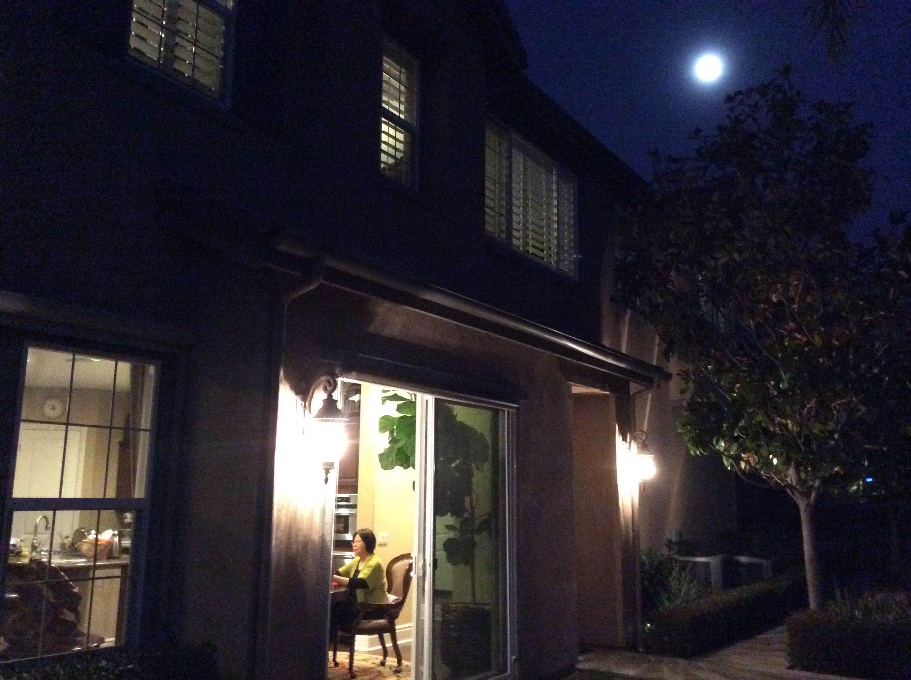

North America Chinese Writers Association Los Angeles
在我自小受到的傳統教育中，早起床是與勤奮、上進划等號的。而睡懶覺則浪費時光，損害身體，空耗生命，是一種頹廢、墮落的生活方式。
我沒有睡懶覺的習慣。偏偏婚後的妻子，卻是一位睡懶覺的「超人」 。在她的理念中，睡懶覺才是享受人生的最好方式。能一覺睡到自然醒，有條件再賴到願意起，才是神仙過的日子。
她睡懶覺成癮，節假日或沒事時，早上被太陽曬醒後，仍盡量地滯留在床上，不吃不喝醉也似地躺著。要上班或有事要辦時，她總是挺到最後一刻才動身起床，五分鐘內穿衣、梳洗、吃飯、出門，猶如百米賽一樣爭分奪秒趕時間。
早些年，我曾試圖改造她這遲起的壞習慣。頭天晚上，先給她講了一通早起緞煉的好處。清晨連哄帶拽，把她推到門外。沒走幾步她就連呼太辛苦，堅決要重鑽熱被窩，享受那給個市長也不換的黎明覺。 此後任憑我把早起的好處說的天花亂墜，她也不為所動。那樣子，就是早上門口有個大元寶，也要睡到過中午後才去撿。我終於敗下陣來，習慣了她的遲起，磨煉出了等的耐性。
移民到美國生活，更是如同到了睡懶覺的天堂，她賴在床上的時間也變本加厲。清晨，室外的新鮮空氣，後院裡的鳥語花香，噴水池里的潺潺流水，都喚不起她離開熱被窩的興趣。睡醒後的她有時側臥在床上，雙眼似睜似閉地看著窗外，似乎是不屑鄰居早起的無謂匆忙；有時靠倆枕頭，若有所思，好像有想不完的心事；有時緊閉的雙眼突然睜開，笑我誤以為她在沈睡；有時伸伸懶腰、蹬蹬腿，算是在被窩里耍拳，做了運動；有時儘管肚子餓的飢腸碌碌，也一忍再忍，委屈一個胃，舒服全身心。有時候竟能就這麼躺到「日落西山紅霞飛」。
圓月當空，早已夜深人靜了，她還在忙著考慮世界大事，遲遲不肯入睡，早上能不睡懶覺嗎？
其實，說她睡懶覺就是懶惰也有失公平。憑心而論，結婚近四十年，她裡裡外外「一把手」，操持家務，樣樣做得無可挑剔。生意上的事，也是從籌劃到運作，事無巨細承攬在身，乾的心甘情願。早上起的遲，那一定是頭天晚上或處理信件，或看連續劇，或試穿衣服，或整理家，熬夜睡的太晚。該吃午飯了還「賴」在床上，那一定是運籌被窩之中，決勝萬里之外，躺在美國的床上，考慮中國的生意。我發現：她聰明的念頭、獨特的想法，正確的決策，都是早上躺在床上產生的。睡足躺夠，才頭腦清晰，才心情舒暢，才有真切的見解，才產生有效的點子。
當然，她遲起也有代價,，那就是起床後的忙！許多該辦的、不得不辦的事堆積在一起，就像熟透了的麥子等著收割一樣，時不我待。好在她經過後半夜和一上午的養精蓄銳，產生了極大的活力，把一天要辦的事，能壓縮到個把小時辦完。
對我來說，她遲起的好處是一天能有個快樂的開始。早晨她靜躺的時光，是家中一天高興的先導。 過去我不以為然，曾催她早起，沒有讓她賴到自認為該起床的心理時間，她就象半夜被吵醒的三歲小孩要哭鬧一樣, 看什麼都不順眼，這一整天家裡也就別想安寧了。相反，只要讓她躺著、睡夠，才能領略到她那小鳥依人的溫柔。
有句諺語說：早起的鳥兒有蟲吃，她卻說不見得。 毛澤東就是個「夜貓子」，不照樣是一代偉人嗎？諸葛亮在隆中時，不也是睡到日出三桿才起床接見劉備麼。現實似乎也在證明她的觀點沒錯——我有幾位國內的朋友，喜好熬夜，很少早起，照樣事業有成。這些「懶」人們，看準時機，該出手時就出手，或開礦請人挖煤，或投資買地建房，一年里就忙那麼幾天，反而衣食住行無憂。而我小時候的一個鄰居，靠賣早點為生，每天起得比雞早，睡得比狗晚，幾十年過去了，仍奮鬥在起跑線上。
仔細一想，早起或遲起與事業是否有成似乎關係不大。有時遲起不但不誤事，還能帶來好運。握說當年美國「九.一一」那天，有一對老夫婦，本來定好早上九點要去世貿大樓遊覽，就是因為老太太貪睡起床遲了，沒按時隨團去，才躲過一劫。
我也曾嘗試著品味了幾次遲起的感受，卻一點感覺不到躺著胡思亂想的快感，體會不到那神仙般的滋味。 酣睡中被擾醒，確實容易讓人無名火平地竄三尺，可睡到自然醒了還讓被子捂著,，反而躺得越久越心急。可見我天生就沒有這享受睡懶覺的命！
唉，魚游水中，鳥棲枝頭，人躺床上，各得其樂，隨她吧!